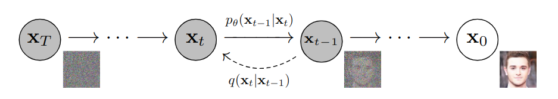
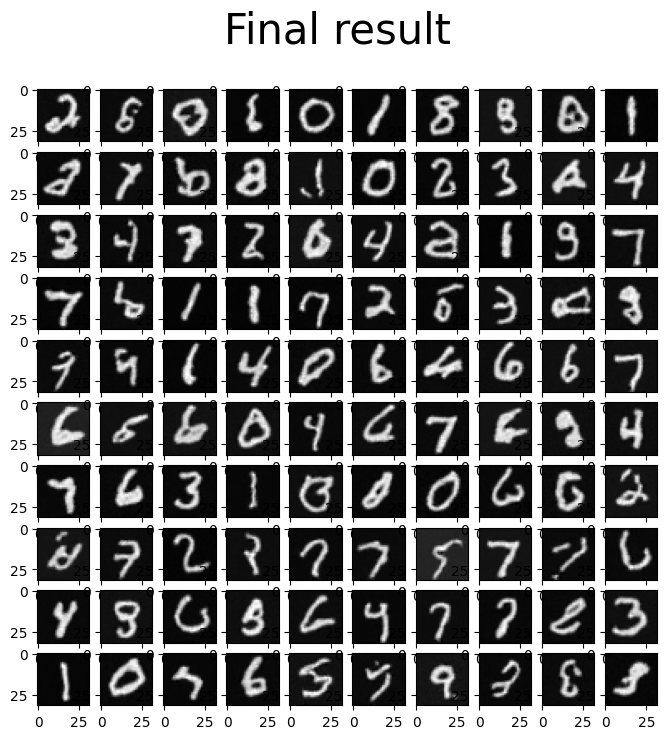
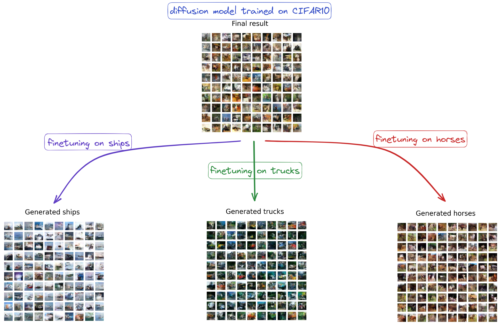
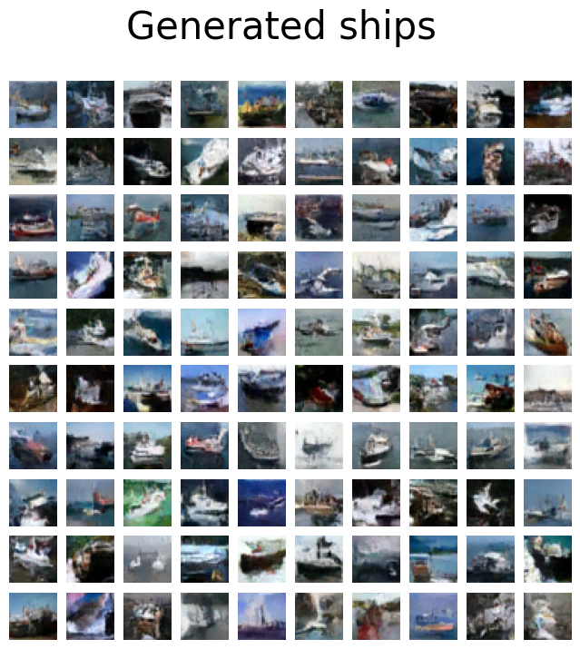
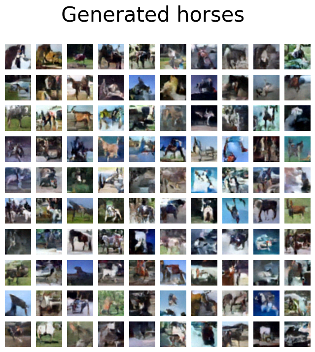
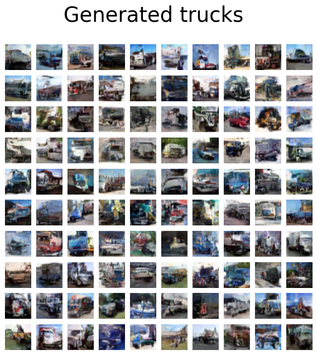

This module presents the work: Denoising Diffusion Probabilistic Models by Jonathan Ho, Ajay Jain, Pieter Abbeel (2020). It starts with a description of the algorithm, then provides some notebooks to implement it on MNIST and CIFAR10 and finishes with some technical details.
Table of Contents

Given a schedule \(\beta_1<\beta_2<\dots <\beta_T\),
We define \(\alpha_t = 1-\beta_t\) and \(\overline{\alpha_t} = \prod_{i=1}^t\alpha_i\), then we have
Hence, we have
class DDPM(nn.Module):
def __init__(self, network, num_timesteps,
beta_start=0.0001, beta_end=0.02, device=device):
super(DDPM, self).__init__()
self.num_timesteps = num_timesteps
self.betas = torch.linspace(beta_start, beta_end,
num_timesteps, dtype=torch.float32).to(device)
self.alphas = 1.0 - self.betas
self.alphas_cumprod = torch.cumprod(self.alphas, axis=0)
self.network = network
self.device = device
self.sqrt_alphas_cumprod =
self.alphas_cumprod ** 0.5
self.sqrt_one_minus_alphas_cumprod =
(1 - self.alphas_cumprod) ** 0.5
def add_noise(self, x_start, noise, timesteps):
# The forward process
# x_start and noise (bs, n_c, w, d)
# timesteps (bs)
s1 = self.sqrt_alphas_cumprod[timesteps] # bs
s2 = self.sqrt_one_minus_alphas_cumprod[timesteps] # bs
s1 = s1.reshape(-1,1,1,1) # (bs, 1, 1, 1)
s2 = s2.reshape(-1,1,1,1) # (bs, 1, 1, 1)
return s1 * x_start + s2 * noise
def reverse(self, x, t):
# The network estimates the noise added
return self.network(x, t)Note that the law \(q(x_{t-1}|x_t,x_0)\) is explicit:
with
but we know that \(x_0 = 1/\sqrt{\overline{\alpha}_t}\left( x_t-\sqrt{1-\overline{\alpha}_t}\epsilon\right)\), hence we have
where we removed the dependence in \(x_0\) and replace it with a dependence in \(t\).
The idea is to approximate \(q(x_{t-1}|x_t)\) by a neural network according to:
and we approximate \(q(x_{0:T})\) by
where \(p(x_T) \sim \mathcal{N}(0,I)\). Note that the variance parameter is fixed to \(\beta_t\) which is the forward variance (mainly for simplicity, variations have been proposed).
The neural network is trained by maximizing the usual Variational bound:
Note that \(L_T\) does not depend on \(\theta\) and for the other terms, they correspond to a KL between Gaussian distributions with an explicit expression:
Now, we make the change of variable:
so that we have
Empirically, the prefactor is removed in the loss and instead of summing over all \(t\), we average over a random \(\tau\in [0,T-1]\), so that the loss is finally:
# inside the training loop
for step, batch in enumerate(dataloader):
batch = batch[0].to(device)
noise = torch.randn(batch.shape).to(device)
timesteps = torch.randint(0, num_timesteps, (batch.shape[0],)).long().to(device)
noisy = model.add_noise(batch, noise, timesteps)
noise_pred = model.reverse(noisy, timesteps)
loss = F.mse_loss(noise_pred, noise)
optimizer.zero_grad()
loss.backward()
optimizer.step()For sampling, we need to simulate the reversed diffusion (Markov chain) starting from \(x_T\sim \mathcal{N}(0,I)\) and then:
# inside Module DDPM
def step(self, model_output, timestep, sample):
# one step of sampling
# timestep (1)
t = timestep
coef_epsilon = (1-self.alphas)/
self.sqrt_one_minus_alphas_cumprod
coef_eps_t = coef_epsilon[t].reshape(-1,1,1,1)
coef_first = 1/self.alphas ** 0.5
coef_first_t = coef_first[t].reshape(-1,1,1,1)
pred_prev_sample =
coef_first_t*(sample-coef_eps_t*model_output)
variance = 0
if t > 0:
noise = torch.randn_like(model_output).to(self.device)
variance = ((self.betas[t] ** 0.5) * noise)
pred_prev_sample = pred_prev_sample + variance
return pred_prev_sample(J. Ho, A. Jain, P. Abbeel 2020)
Given a schedule \(\beta_1<\beta_2<\dots <\beta_T\), the forward diffusion process is defined by: \(q(x_t|x_{t-1}) = \mathcal{N}(x_t; \sqrt{1-\beta_t}x_{t-1},\beta_t I)\) and \(q(x_{1:T}|x_0) = \prod_{t=1}^T q(x_t|x_{t-1})\).
With \(\alpha_t = 1-\beta_t\) and \(\overline{\alpha_t} = \prod_{i=1}^t\alpha_i\), we see that, with \(\epsilon\sim\mathcal{N}(0,I)\):

The training of this notebook on colab takes approximately 20 minutes.
ddpm_nano_empty.ipynb is the notebook where you code the DDPM algorithm (a simple UNet is provided for the network \(\epsilon_\theta(x,t)\)), its training and the sampling. You should get results like this:

Here is the corresponding solution: ddpm_nano_sol.ipynb
The training of this notebook on colab takes approximately 20 minutes (so do not expect high-quality pictures!). Still, after finetuning on specific classes, we see that the model learns features of the class.

With a bit more training (100 epochs), you can get results like this:



Note that the Denoising Diffusion Probabilistic Model is the same for MNIST and CIFAR10, we only change the UNet learning to reverse the noise. For CIFAR10, we adapt the UNet provided in Module 9b. Indeed, you can still use the code provided here for DDPM with other architectures like more complex ones with self-attention like this Unet coded by lucidrains which is the one used in the original paper.
In the paper, the authors used Exponential Moving Average (EMA) on model parameters with a decay factor of \(0.999\). This is not implemented here to keep the code as simple as possible.